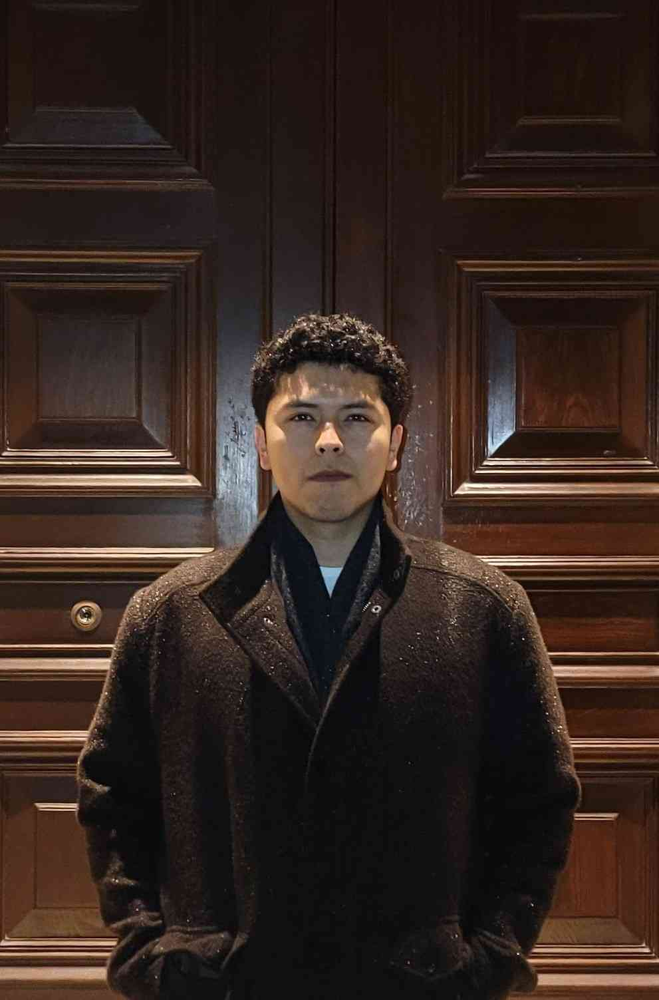

Joaquin Philco
Computer Engineering graduate with hands-on experience in robotics, industry, research, open-source and CubeSat communications.
About Me
Final-year Computer Engineering student (York University, May 2025 grad) with expertise in embedded systems, robotics, and software development. Experience includes PID controller design for robotic arms (ROS2), secure REST API/certificate infrastructure implementation at RBC (Spring Boot, Kubernetes), and embedded communication framework development for CubeSat testing. Also maintained C++/QML camera applications for FuriOS. Seeking real-time intelligent systems roles in aerospace, robotics, or embedded AI. Resume provides further details.
- BEng with Honours in Computer Engineering
- Open source contributor
- Skilled in Python, C++, Java, Bash
Currently
Research Assistant at Tsotsos Lab
Research Assistant at Tsotsos Lab
